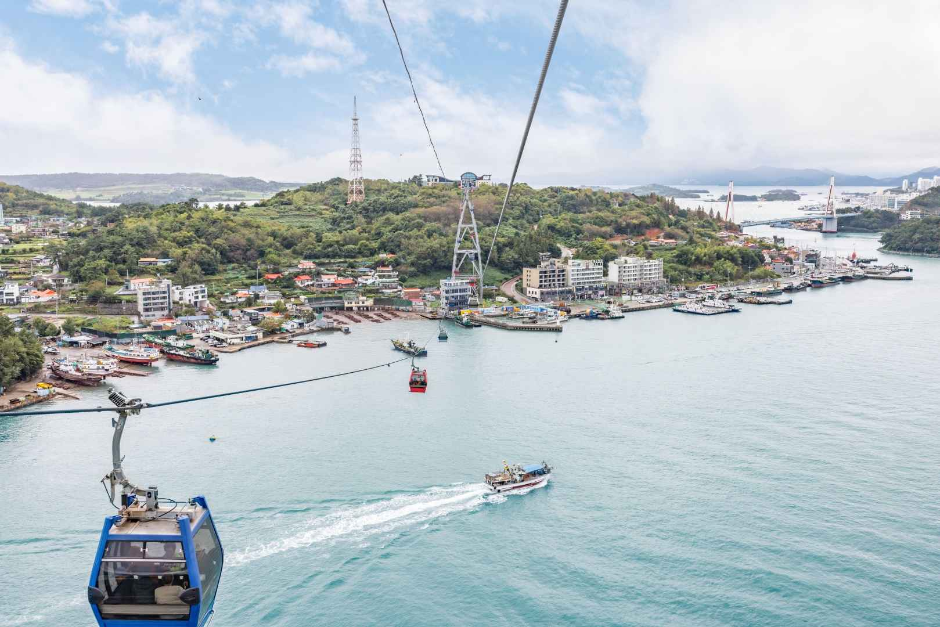
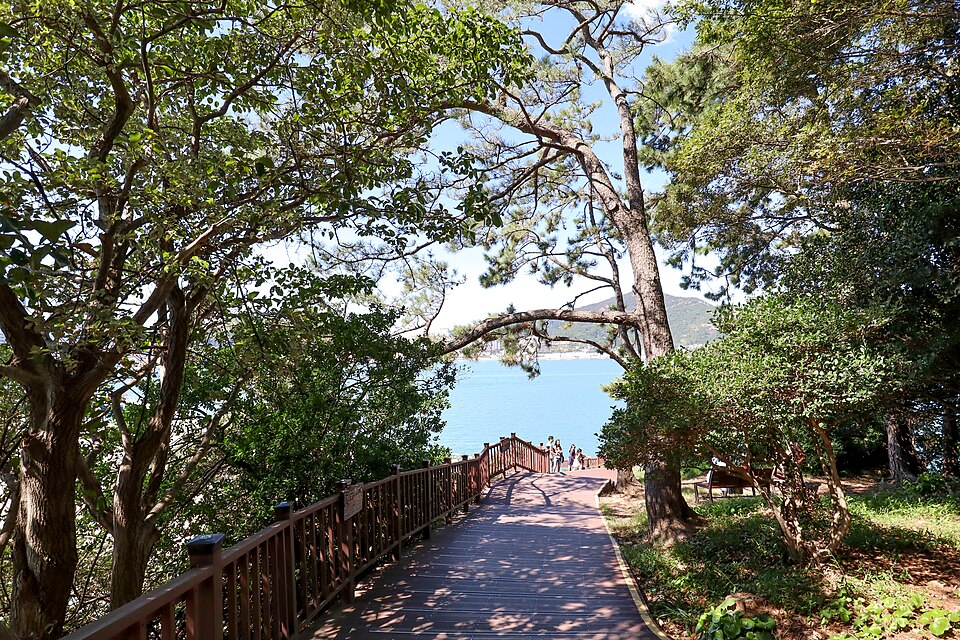

Jeonnam en pantalla: Teleférico marítimo de Yeosu e isla Odongdo
Dos lugares de Yeosu que aparecen en el episodio 352 de 'Welcome, First Time in Korea?', donde chefs húngaros recorrieron la costa: el teleférico marítimo y la isla Odongdo.
Jeonnam: noches en Yeosu y sabores del sur
Jeonnam, en el suroeste de Corea, es conocida por el mar nocturno de Yeosu, la bahía de Suncheon y el bosque de bambú de Damyang. También es el hogar del namdo hansang, la generosa mesa de acompañamientos típica de la región. Entre sus especialidades locales están el cangrejo de piedra marinado en salsa de soja (dolgejang) de Yeosu, los fideos junggan y la raya fermentada (hongeo) de Mokpo, las costillas a la parrilla en forma de hamburguesa (tteokgalbi) de Damyang y los menús hanjeongsik al estilo de Namdo.
Esta entrada reúne dos lugares de Yeosu que aparecen en el episodio 352 del programa de viajes coreano Welcome, First Time in Korea?, titulado "La pesca de chefs húngaros en Yeosu y su segundo viaje a Corea".
Lugares destacados
Teleférico marítimo de Yeosu

📍 Teleférico marítimo de Yeosu · Naver Map · Google Maps
Un teleférico que cruza el mar, con cabinas de suelo de cristal que permiten mirar directamente hacia el agua. Es una de las actividades populares en Yeosu y aparece en el episodio, que sigue a los chefs húngaros por la ciudad.
Isla Odongdo

📍 Isla Odongdo · Naver Map · Google Maps
Una pequeña isla frente a la costa de Yeosu, donde se encuentra un árbol de los deseos al que los visitantes se acercan para pedir un deseo. Es un lugar agradable para caminar disfrutando de las vistas al mar, y también aparece en el episodio 352.
Cómo moverse
Ambos lugares están en el paseo marítimo de Yeosu, así que se combinan fácilmente en un solo día. Recorre Odongdo durante el día y luego toma el teleférico hacia el atardecer para disfrutar del famoso mar nocturno de Yeosu. Para terminar el día, prueba el dolgejang, el plato emblemático de la ciudad. Consulta los horarios de funcionamiento y otros detalles antes de ir.
Lugares de los videos
- Teleférico marítimo de Yeosu (여수 해상케이블카) Teleférico sobre el mar con cabinas de suelo de cristal Naver Map Google Maps
- Isla Odongdo (오동도) Árbol de los deseos Naver Map Google Maps
Ubicaciones y horarios pueden cambiar: consulta el mapa antes de ir.
Vídeos relacionados

Más artículos
- Lugares de Seúl vistos en la tele: Lotte World Tower a 541 m y el Museo Memorial de la Guerra de Corea
- Guía de comida de Jeollanam-do: cangrejo de Yeosu, mariscos y banchan de Mokpo y comida de Gwangju vista en programas coreanos de gastronomía
- Guía de comida callejera y mercados de Seúl: qué comer en el mercado Gwangjang, el mercado de pescado Noryangjin y más (según vídeos de tours gastronómicos)
- Guía de belleza coreana en Seúl: compras en Olive Young de Myeongdong y Seongsu, clínicas de piel y tratamientos de belleza
- Guía de comida coreana por región: qué comer en Seúl, Busan, Jeju, Mokpo, Daegu, Jeonju y más (basada en vídeos populares de mukbang y comida)
- Guía gastronómica de Jeonju: bibimbap, comida callejera de la aldea Hanok, mercado nocturno de Nambu y tteokgalbi de Gunsan (a partir de vídeos de viaje)